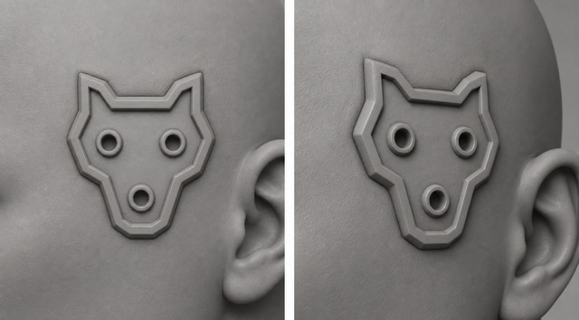

Head Socket — Round 3 runbook
📋 Review panel — at round closeBase assets — what this round builds on
The source image(s) every generation in this round starts from. Click to zoom; open “inputs” for the prompt and reference images that produced each one.

Goal
The design is chosen; this round builds it for real and puts it in hand. We author the recessed wolf socket as one clean, reusable STL master, fuse that master onto a single real character's head, and run a physical test print — because the one thing images can't answer is Jeremy's question: does the recessed detail actually print at 32 mm, and can you get paint into (or around) it? Everything roster-wide waits on that print.
The choices on the table
This is a build round, so the "choices" are the two calls that shape the master and the test — plus the sign-off to spend:
| Decision | Options | Our recommendation |
|---|---|---|
| How we build the wolf | (a) trace the low-poly wolf outline and author it from primitives — no Meshy, deterministic, free; (b) send the render to Meshy (×2 rolls) and pick the clean one | (a) trace-and-author. The r2 gold is already an angular, geometric line-art wolf — traceable as a polygon, so we can skip the Meshy lottery entirely and get exact control of the recess depth and rim height. Meshy stays the fallback if the trace looks lifeless. |
| Recess depth / rim height on the master | the exact millimetres of field-dip and rim-proud | Author to the floors (field ~0.3–0.5 mm below skin, rim + collars proud, every feature ≥0.6 mm) and print a small depth ladder (2–3 rim/recess heights on one plate) so the test print settles "sits up high enough" empirically rather than by guess. |
| Which character to test on | any one roster mesh with a clean temple | Gorgon (used for the r1 fuse feasibility check; temple region already known-good). Say the word if you'd rather it be someone else. |
What we need from you
Sign-off to author + print, plus: confirm the trace-and-author path (vs. Meshy), and confirm Gorgon as the test-print character (or name another). Then we author the master, fuse it, and get a physical print back to judge print + paint access — no roster-wide rollout until that print passes.
Cost
Effectively ~$0 in credits on the recommended path (trace-and-author uses no image/Meshy spend; validation + render are local). Meshy fallback would be ~2 rolls × ~20 credits. The real cost is one test print (Dimitri's printer / filament-or-resin + time).
Technical plan — authoring, fuse, validation, print (pipeline detail)
What changed going in (spec / process deltas)
- spec.md → new "Selected design (r2 close, 2026-07-13)" section locks the geometry the master is authored to: P6 wolf outline, recessed field, three collared socket-holes (eyes + snout), ~one-eye-width, authored-STL delivery. Status moved from "design-selection in progress" → "design selected; authoring the master (r3)".
- rounds.md r2 decision resolved (P6 / recessed / size held / test print); r3 section opened. Verdicts logged to
reviews.json(jason SELECTED, jeremy CAUTION on the gold) andround-feedback.jsonl(r2,final). - Process: first authoring round for this asset — no image generation. The r2 gold
hsocket-r2-P6-recessed-gptimage2medis the visual reference the authored geometry must match; it is embedded on this page as the base asset.
Build steps (the "matrix" for a build round — each gated by its check)
| # | Step | Output | Gate |
|---|---|---|---|
| 1 | Trace the r2-gold wolf outline to a 2D polygon (ears/muzzle vertices); place the 3 port centres (2 eyes + snout) | wolf_outline.svg/points | eyeball trace vs. the gold; symmetry sanity |
| 2 | Author the master from primitives: extrude the wolf-outline rim ring; recess the inner field ~0.3–0.5 mm; add 3 collar cylinders − 3 bores; author a 2–3 step depth ladder variant plate | hsocket-r3-wolf-master.stl (+ ladder) | watertight, single component, features ≥0.6 mm (stl-validation) |
| 3 | Thin-parts probe on the ear tips + eye/snout collar necks (tight: --pitch 0.28, flag necks --fragile-mm 0.6) | probe report | no sub-0.6 mm necks; blunt ears |
| 4 | Fuse the master onto the test character (Gorgon): seat at right temple, orient to local normal, over-embed rim + subtract the recess pocket, boolean union | hsocket-r3-wolf-on-<char>.stl | watertight single shell; temple manifold pre-boolean |
| 5 | Render turnarounds + zoomed temple crops; fresh-context subagent audit vs. the r2 gold | renders + audit record | rim>field>holes reads; wolf + jack both read |
| 6 | Upload master + fused STL + renders to Drive the moment they land; hand over Drive links | Drive links | — |
| 7 | Physical test print (Dimitri) at 32 mm heroic scale | printed mini | print resolution + paint access on the recessed detail |
| 8 | Close the round: review panel (r3-panel.json) with the print verdict; fold the standard into team-brief §4 + character specs | rN review artifact | Dimitri + Jason + Jeremy sign-off |
Meshy fallback (only if the trace reads lifeless): standalone orthographic exemplar render of the wolf plate → Meshy multi-view ×2 → pick the defect-free roll (per-feature comparative review vs. gold) → same fuse step from #4.
Commands (run after sign-off)
Generic setup: pip install -r requirements.txt; secrets via OP_SERVICE_ACCOUNT_TOKEN → op resolves the minis-pipeline vault (preflight op is installed). Pull the r2 gold + the target character mesh from Drive first (tools/drive_sync.sh pull <path>; cloud: Drive MCP).
H=projects/cyber-amazons/head-socket
# NB: author_head_socket.py, stl_validate.py, and fuse_socket.py are NEW scripts
# authored THIS round (per the build-steps table) — they are not in tools/ yet.
# stl_validate.py just wraps the existing trimesh watertight/scale checks from
# references/stl-validation.md (mesh_thin_parts.py already exists). The block
# below is the intended post-sign-off run order, not runnable until they land.
# 1–3 author + validate the master
python3 tools/author_head_socket.py --design p6-wolf --seating recessed \
--trace $H/generated/hsocket-r2-P6-recessed-gptimage2med-1.png \
--size one-eye-width --depth-ladder 0.3,0.4,0.5 \
--out $H/meshy/hsocket-r3-wolf-master.stl
python3 tools/stl_validate.py $H/meshy/hsocket-r3-wolf-master.stl
# tight thin-parts probe: real CLI is --stl (positional not accepted), no --erode;
# tightness is --pitch, and --fragile-mm flags necks below the threshold.
python3 tools/mesh_thin_parts.py --stl $H/meshy/hsocket-r3-wolf-master.stl --pitch 0.28 --fragile-mm 0.6
# 4 fuse onto the test character (Gorgon)
python3 tools/fuse_socket.py --master $H/meshy/hsocket-r3-wolf-master.stl \
--character <gorgon-mesh.stl> --seat right-temple --embed 0.6 --carve-recess \
--out $H/meshy/hsocket-r3-wolf-on-gorgon.stl
python3 tools/stl_validate.py $H/meshy/hsocket-r3-wolf-on-gorgon.stl
# 5 render + audit; 6 upload to Drive ASAP; 7 test print; 8 close roundUpload every returned STL/render to Drive the moment it lands (do not batch to session end). The durable log is rounds.md; the round closes with an r3-panel review artifact carrying the test-print verdict.